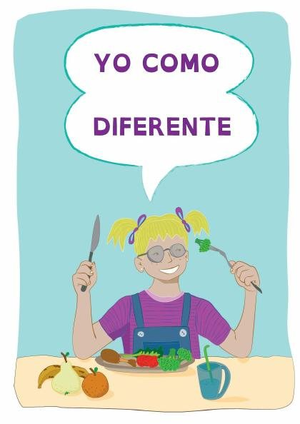
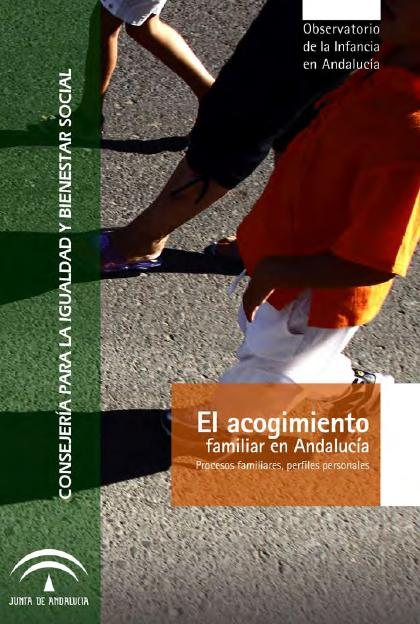
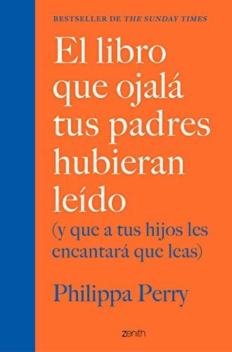
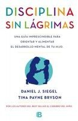
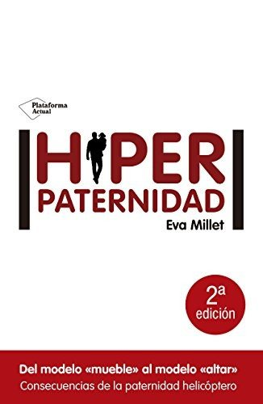

Libros de psicología infantil, familiar y parental
Libros de psicología infantil, familiar y parental en español: 73 libros completos para leer gratis aquí mismo y 24 fichas de títulos actuales.
Psicología de la familiaCiberacosoParentalidad positivaPsicología de la crianzaAcoso escolarComunicación familiarDesarrollo de la autonomía infantilEstilos parentalesDivorcio y adaptación infantilProblemas de conductaConducta desafianteVínculo entre padres e hijosConflicto familiarRivalidad entre hermanosEducación emocional infantilDisciplina y límitesRabietas y regulación emocionalAnsiedad infantilResiliencia infantil
Intervención psicoeducativa en las escuelas para mejorar la convivencia y la inclusión del alumnado rechazado. Fundamentación del modelo GREIGarcía Bacete, Francisco Juan; Marande Perrin, Ghislaine
Intervención psicoeducativa en las escuelas para mejorar la convivencia y la inclusión del alumnado rechazado. Fundamentación del modelo GREIGarcía Bacete, Francisco Juan; Marande Perrin, GhislaineAutocuidado: Hábitos disfuncionales en la relación profesional/familiaMartínez, José Manuel; Ratón Berlanga, Marta; Soria-Oliver, María; García Sánchez, Rubén; López, Jorge S.; Martín López, María Jesús
Autocuidado: Hábitos disfuncionales en la relación profesional/familiaMartínez, José Manuel; Ratón Berlanga, Marta; Soria-Oliver, María; García Sánchez, Rubén; López, Jorge S.; Martín López, María JesúsDimensiones psicosociales de la donación de órganos: La decisión ante la solicitud de consentimiento para la donación de órganos de un familiarMartín López, María Jesús; Martínez, José Manuel; Ratón Berlanga, Marta; Soria-Oliver, María; García Sánchez, Rubén; López, Jorge S.
Dimensiones psicosociales de la donación de órganos: La decisión ante la solicitud de consentimiento para la donación de órganos de un familiarMartín López, María Jesús; Martínez, José Manuel; Ratón Berlanga, Marta; Soria-Oliver, María; García Sánchez, Rubén; López, Jorge S.La prevención del acoso y ciberacoso a través de las clases de Educación FísicaEvangelio Caballero, Carlos; Saiz-González, Pablo; Fernández-Río, Javier; González-Víllora, Sixto
La prevención del acoso y ciberacoso a través de las clases de Educación FísicaEvangelio Caballero, Carlos; Saiz-González, Pablo; Fernández-Río, Javier; González-Víllora, SixtoManual Go-Byst! Un programa breve de sensibilización y movilización de espectadores frente al acoso sexual entre adolescentesSánchez Jiménez, Virginia; Rodríguez de Arriba, María Luisa; Muñoz Fernández, Noelia; Ortega Rivera, Francisco Javier; Durán Guerrero, Estrella; Moreno Albalat, María Isabel
Manual Go-Byst! Un programa breve de sensibilización y movilización de espectadores frente al acoso sexual entre adolescentesSánchez Jiménez, Virginia; Rodríguez de Arriba, María Luisa; Muñoz Fernández, Noelia; Ortega Rivera, Francisco Javier; Durán Guerrero, Estrella; Moreno Albalat, María IsabelPrevención de la violencia de género en parejas adolescentes desde la parentalidad positivaMateos Inchaurrondo, Ainoa; Rodríguez Rodríguez, Julio
Prevención de la violencia de género en parejas adolescentes desde la parentalidad positivaMateos Inchaurrondo, Ainoa; Rodríguez Rodríguez, JulioPrograma Bienestar. Acompañando a familias de adolescentes con problemas de salud mentalAntolín Suárez, Lucía; Rodríguez Meirinhos, Ana; Nieto-Casado, Francisco Javier; Jiménez García, Lucía; Baena Medina, Magdalena Sofía; Barroso Díaz, Sira; García Pineda, Olalla
Programa Bienestar. Acompañando a familias de adolescentes con problemas de salud mentalAntolín Suárez, Lucía; Rodríguez Meirinhos, Ana; Nieto-Casado, Francisco Javier; Jiménez García, Lucía; Baena Medina, Magdalena Sofía; Barroso Díaz, Sira; García Pineda, OlallaRelaciones sanas: Guía dirigida a familias para la prevención de la violencia en las relaciones de pareja jovenLara Vázquez, Laura; Providell, Lesliee; Mora, Denise
Relaciones sanas: Guía dirigida a familias para la prevención de la violencia en las relaciones de pareja jovenLara Vázquez, Laura; Providell, Lesliee; Mora, Denise"Aprender juntos, crecer en familia". Formación inicial de formadoresFuentes-Peláez, Núria; Mateos Inchaurrondo, Ainoa
"Aprender juntos, crecer en familia". Formación inicial de formadoresFuentes-Peláez, Núria; Mateos Inchaurrondo, AinoaCrecer a cielo abierto: salud colectiva y psicosocial de infantes, escolares y adolescentes de familias recicladorasSoliz Torres, María Fernanda; Caldas Hidalgo, Carol Vanessa; Enríquez Cárdenas, Doménica; Monge Chiguano, Melissa Carolina; Ortiz Jaramillo, Paola
Crecer a cielo abierto: salud colectiva y psicosocial de infantes, escolares y adolescentes de familias recicladorasSoliz Torres, María Fernanda; Caldas Hidalgo, Carol Vanessa; Enríquez Cárdenas, Doménica; Monge Chiguano, Melissa Carolina; Ortiz Jaramillo, PaolaIntervención familiar. Necesidades y apoyosJiménez García, Lucía; Hidalgo García, María Victoria
Intervención familiar. Necesidades y apoyosJiménez García, Lucía; Hidalgo García, María Victoria¿Estamos prestando demasiada atención o demasiado poca atención a nuestros hijos?
¿Estamos prestando demasiada atención o demasiado poca atención a nuestros hijos?Características y evolución de chicos y chicas con familias colaboradoras y relaciones y contactos con sus familias de origen: Informe descriptivo, comparativo y multi-informanteEspinosa, Elizabeth; Molano Mérida, Nuria; León Manso, Esperanza
Características y evolución de chicos y chicas con familias colaboradoras y relaciones y contactos con sus familias de origen: Informe descriptivo, comparativo y multi-informanteEspinosa, Elizabeth; Molano Mérida, Nuria; León Manso, EsperanzaCuaderno de orientaciones para familias y docentesLedesma Marín, Nieves; Pellejero Goñi, Lucía; Scotton, Paolo; Alemany González, Amparo; Monzón González, Javier
Cuaderno de orientaciones para familias y docentesLedesma Marín, Nieves; Pellejero Goñi, Lucía; Scotton, Paolo; Alemany González, Amparo; Monzón González, JavierHijos e hijas de víctimas de femicidio: aportes para una política pública de protecciónArrobo Andrade, Catalina Elizabeth
Hijos e hijas de víctimas de femicidio: aportes para una política pública de protecciónArrobo Andrade, Catalina ElizabethVivir sin recaídasPedro Rafael Gargoloff, María Delia Michat y otros
Vivir sin recaídasPedro Rafael Gargoloff, María Delia Michat y otrosFamilia y valores contra la violencia en la escuelaLópez Hernáez, Lara
Familia y valores contra la violencia en la escuelaLópez Hernáez, LaraFamilias Fuertes: Amor y Límites. Guía para la gestión y la aplicación del programa
Familias Fuertes: Amor y Límites. Guía para la gestión y la aplicación del programaFamilias Fuertes: Amor y Límites. Manual para la formación de recursos humanos del programa
Familias Fuertes: Amor y Límites. Manual para la formación de recursos humanos del programaFamilias tejedoras de futuro : propuesta de investigación-intervención en contextos de posconflicto y pazArroyave Gómez, Martha Cecilia; Giraldo Usme, María del Tránsito; González Mora, Alexandra María; Lopera Jaramillo, Ángela Maritza; Valderrama Barrera, Martha Inés; Gallego Roncancio, Mariana
Familias tejedoras de futuro : propuesta de investigación-intervención en contextos de posconflicto y pazArroyave Gómez, Martha Cecilia; Giraldo Usme, María del Tránsito; González Mora, Alexandra María; Lopera Jaramillo, Ángela Maritza; Valderrama Barrera, Martha Inés; Gallego Roncancio, MarianaPadres, niños y psicoterapia : la inclusión parental en psicoterapia infantil desde la representación de sus participantesLondoño Giraldo, Johana
Padres, niños y psicoterapia : la inclusión parental en psicoterapia infantil desde la representación de sus participantesLondoño Giraldo, JohanaParticipando en la construcción de una escuela inclusiva. 5 preguntas y respuestas para las familiasSimón Rueda, Cecilia; Fernández Blázquez, M. Luz de los Milagros; González de Rivera, Teresa; Dios Pérez, María José de; Echeita Sarrionandia, Gerardo; Muñoz-Martínez, Yolanda
Participando en la construcción de una escuela inclusiva. 5 preguntas y respuestas para las familiasSimón Rueda, Cecilia; Fernández Blázquez, M. Luz de los Milagros; González de Rivera, Teresa; Dios Pérez, María José de; Echeita Sarrionandia, Gerardo; Muñoz-Martínez, YolandaPrevención integral del ciberacoso y otros riesgos y violencias onlineAdrian Aguayo Llanos
Prevención integral del ciberacoso y otros riesgos y violencias onlineAdrian Aguayo LlanosPrograma de Intervención Familiar (PIF): Manual técnico para su implementación y evaluaciónHidalgo García, María Victoria; Jiménez García, Lucía; Pérez Padilla, Javier; Herrera Collado, Ester
Programa de Intervención Familiar (PIF): Manual técnico para su implementación y evaluaciónHidalgo García, María Victoria; Jiménez García, Lucía; Pérez Padilla, Javier; Herrera Collado, EsterPrograma para la promoción de parentalidad positiva en familias refugiadasJiménez García, Lucía; Hidalgo García, María Victoria; Nogales Groiss, Irina; Baena Medina, Magdalena Sofía; Maya Segura, Jesús Manuel
Programa para la promoción de parentalidad positiva en familias refugiadasJiménez García, Lucía; Hidalgo García, María Victoria; Nogales Groiss, Irina; Baena Medina, Magdalena Sofía; Maya Segura, Jesús ManuelLa actividad física y su relación con el acoso escolarChacón Borrego, Fátima
La actividad física y su relación con el acoso escolarChacón Borrego, FátimaNotas sobre el juego hoyRoxana Elizabeth Gaudio, Andrea Elizabeth Mirc
Notas sobre el juego hoyRoxana Elizabeth Gaudio, Andrea Elizabeth MircYo como diferente: un libro para toda la familiaRuiz Brunner, María de las Mercedes; Murray, María Agostina; Pavan, Mariana; Escobar Zuluaga, L. Johana; Cieri, M. Elisabeth; Cuestas, Eduardo
Yo como diferente: un libro para toda la familiaRuiz Brunner, María de las Mercedes; Murray, María Agostina; Pavan, Mariana; Escobar Zuluaga, L. Johana; Cieri, M. Elisabeth; Cuestas, Eduardo
Diversidad familiar. Una perspectiva antropológicaBruna Álvarez, Silvina Monteros Obelar
Diversidad familiar. Una perspectiva antropológicaBruna Álvarez, Silvina Monteros ObelarEstrategias de innovación para el apoyo social de las familias. Voluntariado, mentoría y e-parentingBalsells, M. Àngels; Vaquero Tió, Eduard; Fernández-Rodrigo, Laura; Fuentes-Peláez, Núria; Mateos Inchaurrondo, Ainoa
Estrategias de innovación para el apoyo social de las familias. Voluntariado, mentoría y e-parentingBalsells, M. Àngels; Vaquero Tió, Eduard; Fernández-Rodrigo, Laura; Fuentes-Peláez, Núria; Mateos Inchaurrondo, AinoaManual del cuidador familiar. (Es)tar con la demencia: Programa de capacitación para cuidadores familiares de personas con demencia que residen en el domicilioLia Sousa; Carlos Sequeira; Carme Ferré Grau
Manual del cuidador familiar. (Es)tar con la demencia: Programa de capacitación para cuidadores familiares de personas con demencia que residen en el domicilioLia Sousa; Carlos Sequeira; Carme Ferré GrauPAIF: Programa de Apoyo Integral a las Familias: Dossier Profesionales y FamiliasHidalgo García, María Victoria; Oliva Delgado, Alfredo; Jiménez García, Lucía; Antolín Suárez, Lucía; Menéndez Álvarez-Dardet, Susana; Lorence Lara, Bárbara
PAIF: Programa de Apoyo Integral a las Familias: Dossier Profesionales y FamiliasHidalgo García, María Victoria; Oliva Delgado, Alfredo; Jiménez García, Lucía; Antolín Suárez, Lucía; Menéndez Álvarez-Dardet, Susana; Lorence Lara, BárbaraPrevención de situaciones de ciberacoso en la adolescenciaRodríguez Domínguez, Carmen; Martínez Pecino, Roberto; Durán Segura, Mercedes
Prevención de situaciones de ciberacoso en la adolescenciaRodríguez Domínguez, Carmen; Martínez Pecino, Roberto; Durán Segura, MercedesEl método definitivo para tener hijos lectores: consejos y recetas milagrosas que garantizan el éxito escolarJoan Carles Girbés
El método definitivo para tener hijos lectores: consejos y recetas milagrosas que garantizan el éxito escolarJoan Carles GirbésLa orientación y la tutoría escolar con familias: teoría y prácticaParejo, José-Luis; Pinto Delgado, José María; Mottareale Calvanese, Daria; Pinto Delgado, Inmaculada; Valls-Carol, Rosa; Padrós Cuxart, Maria; Esteve-Mon, Francesc M.; Sánchez Herrero, Jesús María; Ma
La orientación y la tutoría escolar con familias: teoría y prácticaParejo, José-Luis; Pinto Delgado, José María; Mottareale Calvanese, Daria; Pinto Delgado, Inmaculada; Valls-Carol, Rosa; Padrós Cuxart, Maria; Esteve-Mon, Francesc M.; Sánchez Herrero, Jesús María; MaPromoción de la parentalidad positiva durante la preparación al nacimiento y la crianzaPalacios González, Jesús; Moreno Rodríguez, María del Carmen; Oliva Delgado, Alfredo; Román Rodríguez, Maite; Antolín Suárez, Lucía; Estévez Campos, Rosa Mª; Pascual García, Diana Mª
Promoción de la parentalidad positiva durante la preparación al nacimiento y la crianzaPalacios González, Jesús; Moreno Rodríguez, María del Carmen; Oliva Delgado, Alfredo; Román Rodríguez, Maite; Antolín Suárez, Lucía; Estévez Campos, Rosa Mª; Pascual García, Diana MªAcoso escolar y ciberacoso: Propuestas para la acciónOrjuela López, Liliana; Cabrera de los Santos Finalé, Belkis; Calmaestra Villén, Juan; Mora Merchán, Joaquín Antonio; Ortega Ruiz, Rosario
Acoso escolar y ciberacoso: Propuestas para la acciónOrjuela López, Liliana; Cabrera de los Santos Finalé, Belkis; Calmaestra Villén, Juan; Mora Merchán, Joaquín Antonio; Ortega Ruiz, RosarioDéficits de atención y trastornos de conductaGemma Alsina Masmitjà, Carme Saumell Mir, Àngels Arroyo Rodríguez y otros
Déficits de atención y trastornos de conductaGemma Alsina Masmitjà, Carme Saumell Mir, Àngels Arroyo Rodríguez y otrosEntiéndeme, enséñame: guía para la atención educativa al alumnado en situaciones de acogimiento familiar, adopción y acogimiento residencialPalacios González, Jesús; Jiménez Morago, Jesús Miguel; Espert, Mireia; Fuchs, Naomi
Entiéndeme, enséñame: guía para la atención educativa al alumnado en situaciones de acogimiento familiar, adopción y acogimiento residencialPalacios González, Jesús; Jiménez Morago, Jesús Miguel; Espert, Mireia; Fuchs, NaomiVínculos protectores : apego en padres e hijos en vulnerabilidadGeenen, Greet; Corveleyn, Jozef; Traverso Koroleff, Pierina; Llanos Bustamante, Eduardo
Vínculos protectores : apego en padres e hijos en vulnerabilidadGeenen, Greet; Corveleyn, Jozef; Traverso Koroleff, Pierina; Llanos Bustamante, EduardoFamilias en riesgo que reciben intervenciones de preservación familiar: Perfil psicosocial de una muestra de los Servicios Sociales Comunitarios de la Diputación de HuelvaMenéndez Álvarez-Dardet, Susana; Hidalgo García, María Victoria; Mendoza Sierra, María Isabel; Pérez Padilla, Javier; Lorence Lara, Bárbara; Sánchez Hidalgo, José; Jiménez García, Lucía; Arenas Rojas,
Familias en riesgo que reciben intervenciones de preservación familiar: Perfil psicosocial de una muestra de los Servicios Sociales Comunitarios de la Diputación de HuelvaMenéndez Álvarez-Dardet, Susana; Hidalgo García, María Victoria; Mendoza Sierra, María Isabel; Pérez Padilla, Javier; Lorence Lara, Bárbara; Sánchez Hidalgo, José; Jiménez García, Lucía; Arenas Rojas,Escala de calidad de vida familiar: manual de aplicaciónVerdugo Alonso, Miguel Ángel; Rodríguez Aguilella, Alba; Sainz Modinos, Fabián
Escala de calidad de vida familiar: manual de aplicaciónVerdugo Alonso, Miguel Ángel; Rodríguez Aguilella, Alba; Sainz Modinos, FabiánFamilias y educación social: un encuentro necesarioBRETONES, EVA; Monteys Homar, Maria Isabel; Morales Fernández, Esther; Rendón Toro, Gloria Elena; Solé Blanch, Jordi; Ubieto Pardo, José Ramón; Vila Savall, Lluís
Familias y educación social: un encuentro necesarioBRETONES, EVA; Monteys Homar, Maria Isabel; Morales Fernández, Esther; Rendón Toro, Gloria Elena; Solé Blanch, Jordi; Ubieto Pardo, José Ramón; Vila Savall, LluísLa mediación familiar en un marco transformadorMontoya Sánchez, Miguel Ángel; Puerta Lopera, Isabel del Socorro
La mediación familiar en un marco transformadorMontoya Sánchez, Miguel Ángel; Puerta Lopera, Isabel del SocorroA la sombra del migrante. Un abordaje psicosocial a las familias de migrantes en el lugar de origenTabares Ochoa, Catalina Maria; Ghiso Cotos, Alfredo Manuel; Ramírez Robledo, Libia Elena; Morales Mesa, Santiago Alberto
A la sombra del migrante. Un abordaje psicosocial a las familias de migrantes en el lugar de origenTabares Ochoa, Catalina Maria; Ghiso Cotos, Alfredo Manuel; Ramírez Robledo, Libia Elena; Morales Mesa, Santiago AlbertoGuía para trabajar la historia de vida con niños y niñas: Acogimiento familiar y residencialJiménez Morago, Jesús Miguel; Martínez Cabeza, Rocío; Mata Fernández, Estefanía
Guía para trabajar la historia de vida con niños y niñas: Acogimiento familiar y residencialJiménez Morago, Jesús Miguel; Martínez Cabeza, Rocío; Mata Fernández, EstefaníaEl acogimiento familiar en Andalucía: procesos familiares, perfiles personalesJiménez Morago, Jesús Miguel; Palacios González, Jesús
El acogimiento familiar en Andalucía: procesos familiares, perfiles personalesJiménez Morago, Jesús Miguel; Palacios González, Jesús
Un niño con autismo en la familia: guía básica para familias que han recibido un diagnóstico de autismo para su hijo o hijaBohórquez Ballesteros, Diana Milena; Alonso Peña, José Ramón; Canal Bedia, Ricardo; Martín Cilleros, María Victoria; García Primo, Patricia; Guisuraga Fernández, Zoila; Martínez Conejo, Amelia; Herráe
Un niño con autismo en la familia: guía básica para familias que han recibido un diagnóstico de autismo para su hijo o hijaBohórquez Ballesteros, Diana Milena; Alonso Peña, José Ramón; Canal Bedia, Ricardo; Martín Cilleros, María Victoria; García Primo, Patricia; Guisuraga Fernández, Zoila; Martínez Conejo, Amelia; HerráeLa familia y los medios de comunicación : una guía para orientar a las familias sobre el uso de los medios de comunicación y las nuevas tecnologías.Loscertales Abril, Felicidad; Núñez Domínguez, Trinidad; Contreras Medina, Fernando Ramón; González, Rafael; Martínez-País Loscertales, Felicidad; Montero, Joaquín M.; Vayón, Germán
La familia y los medios de comunicación : una guía para orientar a las familias sobre el uso de los medios de comunicación y las nuevas tecnologías.Loscertales Abril, Felicidad; Núñez Domínguez, Trinidad; Contreras Medina, Fernando Ramón; González, Rafael; Martínez-País Loscertales, Felicidad; Montero, Joaquín M.; Vayón, GermánEstilo de crianza y construcción del autoconcepto en adolescentesSaavedra Guajardo, Eugenio
Estilo de crianza y construcción del autoconcepto en adolescentesSaavedra Guajardo, EugenioLos padres : actores claves en el proceso de comunicación familiarAylwin de Barros, Nidia
Los padres : actores claves en el proceso de comunicación familiarAylwin de Barros, NidiaLa familia : la perspectiva de los niños. Un intento de interpretar las ausencias del padre en la infancia de José María ArguedasRivera, Cecilia
La familia : la perspectiva de los niños. Un intento de interpretar las ausencias del padre en la infancia de José María ArguedasRivera, CeciliaMarta y MaríaArmando Palacio Valdés
Marta y MaríaArmando Palacio ValdésHerramientas y recursos digitales como apoyo a las familias del alumnado con TEARomán Graván, Pedro; López Meneses, Eloy; Siles Rojas, Carmen
Herramientas y recursos digitales como apoyo a las familias del alumnado con TEARomán Graván, Pedro; López Meneses, Eloy; Siles Rojas, CarmenBases conceptuales de la intervención familiar: el estudio de la familiaMoreno Rodríguez, María del Carmen
Bases conceptuales de la intervención familiar: el estudio de la familiaMoreno Rodríguez, María del CarmenCiberacoso y comportamiento suicida en la población adolescente: una revisión bibliográficaJiménez García, Irene; Borrallo Riego, Álvaro; Trigo Ruiz, Alba; Guerra Martín, María Dolores
Ciberacoso y comportamiento suicida en la población adolescente: una revisión bibliográficaJiménez García, Irene; Borrallo Riego, Álvaro; Trigo Ruiz, Alba; Guerra Martín, María DoloresDinámica familiar en adolescentes con trastornos de la conducta alimentaria: una revisión bibliográficaTrigo Ruiz, Alba; Jiménez García, Irene; Borrallo Riego, Álvaro; Guerra Martín, María Dolores
Dinámica familiar en adolescentes con trastornos de la conducta alimentaria: una revisión bibliográficaTrigo Ruiz, Alba; Jiménez García, Irene; Borrallo Riego, Álvaro; Guerra Martín, María DoloresIntervención familiar en protección a la infancia y la adolescencia: la adopción como medida de protecciónRomán Rodríguez, Maite; Palacios González, Jesús
Intervención familiar en protección a la infancia y la adolescencia: la adopción como medida de protecciónRomán Rodríguez, Maite; Palacios González, JesúsLa intervención familiar durante la adolescenciaOliva Delgado, Alfredo; Parra Jiménez, Águeda
La intervención familiar durante la adolescenciaOliva Delgado, Alfredo; Parra Jiménez, ÁguedaModalidades de intervención y apoyo a las familiasHidalgo García, María Victoria; Maya Segura, Jesús Manuel; Jiménez García, Lucía; Pérez Pichardo, Salomé
Modalidades de intervención y apoyo a las familiasHidalgo García, María Victoria; Maya Segura, Jesús Manuel; Jiménez García, Lucía; Pérez Pichardo, SaloméAtención precoz, crianza y trabajo con familias, febrero 2020Escolà Serra, Alex
Atención precoz, crianza y trabajo con familias, febrero 2020Escolà Serra, AlexFamilias de madres solas por elección. Nuevos contextos de desarrollo y para la intervenciónGonzález Rodríguez, María del Mar; Díez López, Marta; Morgado Camacho, Beatriz María
Familias de madres solas por elección. Nuevos contextos de desarrollo y para la intervenciónGonzález Rodríguez, María del Mar; Díez López, Marta; Morgado Camacho, Beatriz MaríaCiberacoso, uso problemático de redes sociales virtuales e ideación suicida en adolescentesVarela-Garay, Rosa M.; Gálvez-Pichardo, Antonio; Callejas-Jerónimo, Juan E.; Musitu Ochoa, Gonzalo
Ciberacoso, uso problemático de redes sociales virtuales e ideación suicida en adolescentesVarela-Garay, Rosa M.; Gálvez-Pichardo, Antonio; Callejas-Jerónimo, Juan E.; Musitu Ochoa, GonzaloSociedad, familia y educación, febrero 2018Solé Gallart, Isabel; Naranjo, Mila; Bolea López, Enric
Sociedad, familia y educación, febrero 2018Solé Gallart, Isabel; Naranjo, Mila; Bolea López, EnricUso del teléfono móvil, juventud y familiaCruz-Díaz, María del Rocío; Caro González, Francisco Javier; Ramírez García, Antonia
Uso del teléfono móvil, juventud y familiaCruz-Díaz, María del Rocío; Caro González, Francisco Javier; Ramírez García, AntoniaEncontrar a nuestros hijos : testimonio de una madreLuján de Molina, Sara; Solis, Ana Carol
Encontrar a nuestros hijos : testimonio de una madreLuján de Molina, Sara; Solis, Ana CarolNuevos tiempos para las familias, familias para los nuevos tiempos. De las sociedades tradicionales a las sociedades burguesas: perspectivas comparadas entre Argentina y España, Córdoba (Argentina)Ghirardi, Mónica; Irigoyen López, Antonio
Nuevos tiempos para las familias, familias para los nuevos tiempos. De las sociedades tradicionales a las sociedades burguesas: perspectivas comparadas entre Argentina y España, Córdoba (Argentina)Ghirardi, Mónica; Irigoyen López, AntonioRedes de apoyo socio familiar en personas con enfermedad crónicaRomero Serrano, Rocío; Casado Mejía, Rosa María; Rebollo Catalán, María Ángeles; Arroyo Rodríguez, Almudena; Lancharro Tavero, Inmaculada; Calvo Cabrera, Isabel María
Redes de apoyo socio familiar en personas con enfermedad crónicaRomero Serrano, Rocío; Casado Mejía, Rosa María; Rebollo Catalán, María Ángeles; Arroyo Rodríguez, Almudena; Lancharro Tavero, Inmaculada; Calvo Cabrera, Isabel MaríaEl desarrollo de los niños, paso a pasoMarta Sadurní, Carles Rostán Sánchez, Elisabet Serrat
El desarrollo de los niños, paso a pasoMarta Sadurní, Carles Rostán Sánchez, Elisabet SerratOrientación e intervención familiar en el contexto educativo desde el enfoque ecosistémicoCoronado Hijón, Antonio
Orientación e intervención familiar en el contexto educativo desde el enfoque ecosistémicoCoronado Hijón, AntonioIntroducción a la psicofísicaAznar Casanova, José Antonio
Introducción a la psicofísicaAznar Casanova, José AntonioMoral teórico-práctica y educación, para el uso de las escuelas y de las familiasTrigo, José M
Moral teórico-práctica y educación, para el uso de las escuelas y de las familiasTrigo, José MLa tía TulaMiguel de Unamuno
La tía TulaMiguel de UnamunoPermiso para sentirMarc Brackett
Permiso para sentirMarc BrackettEl libro que ojalá tus padres hubieran leídoPhilippa Perry
El libro que ojalá tus padres hubieran leídoPhilippa Perry
El poder de la presenciaDaniel J. Siegel y Tina Payne Bryson
El poder de la presenciaDaniel J. Siegel y Tina Payne BrysonLa lección de August (Wonder)R. J. Palacio
La lección de August (Wonder)R. J. PalacioComo agua para chocolateLaura Esquivel
Como agua para chocolateLaura EsquivelDisciplina sin lágrimasDaniel J. Siegel y Tina Payne Bryson
Disciplina sin lágrimasDaniel J. Siegel y Tina Payne Bryson
El cerebro del niño explicado a los padresÁlvaro Bilbao
El cerebro del niño explicado a los padresÁlvaro BilbaoHiperpaternidadEva Millet
HiperpaternidadEva Millet
Emocionario. Di lo que sientesCristina Núñez Pereira y Rafael R. Valcárcel
Emocionario. Di lo que sientesCristina Núñez Pereira y Rafael R. ValcárcelEducar en el asombroCatherine L'Ecuyer
Educar en el asombroCatherine L'EcuyerEl monstruo de coloresAnna Llenas
El monstruo de coloresAnna LlenasLos secretos de la motivaciónJosé Antonio Marina
Los secretos de la motivaciónJosé Antonio MarinaEl curioso incidente del perro a medianocheMark Haddon
El curioso incidente del perro a medianocheMark HaddonDelirioLaura Restrepo
DelirioLaura RestrepoDisciplina positivaJane Nelsen
Disciplina positivaJane NelsenBésame muchoCarlos González
Bésame muchoCarlos GonzálezUn grito desesperadoCarlos Cuauhtémoc Sánchez
Un grito desesperadoCarlos Cuauhtémoc SánchezEducar en la realidadCatherine L'Ecuyer
Educar en la realidadCatherine L'EcuyerEl cerebro del niñoDaniel J. Siegel y Tina Payne Bryson
El cerebro del niñoDaniel J. Siegel y Tina Payne BrysonLa generación ansiosaJonathan Haidt
La generación ansiosaJonathan HaidtLos patitos feos. La resiliencia: una infancia infeliz no determina la vidaBoris Cyrulnik
Los patitos feos. La resiliencia: una infancia infeliz no determina la vidaBoris CyrulnikCómo hablar para que sus hijos le escuchen y cómo escuchar para que sus hijos le hablenAdele Faber y Elaine Mazlish
Cómo hablar para que sus hijos le escuchen y cómo escuchar para que sus hijos le hablenAdele Faber y Elaine MazlishLa casa de Bernarda AlbaFederico García Lorca
La casa de Bernarda AlbaFederico García LorcaNadaCarmen Laforet
NadaCarmen LaforetTemas relacionados
¿Estás eligiendo carrera?
Haz gratis el test de orientación vocacional de AURZANE: intereses, aptitudes, autoconcepto y hábitos de estudio, con informe completo.